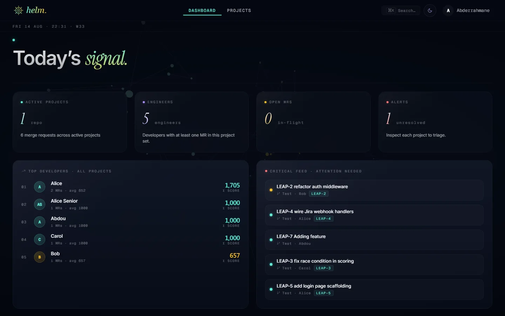

Webhook-first ingestion
GitHub and Jira updates enter a common pipeline instead of relying only on manual refresh.
OCP Solutions / Engineering intelligence / Collaborative project
A full-stack platform that connects GitHub and Jira activity, classifies review feedback, generates normalized quality scores, and surfaces project trends, alerts, and reports.

Commits, pull requests, review comments, Jira issues, and story points were scattered across tools. The team needed one place to turn those signals into understandable project health, while keeping the reasoning behind each score visible.
LEAP was co-built with Houda Toudali. The repository history shows shared delivery across the frontend and backend.
My contributions focused on project-detail experiences, score explanations, dashboard and interface improvements, search and filtering, edit workflows, Jira sprint and link handling, trends, alerts, and integration problem solving. Houda contributed extensively across the backend, reporting, authentication, webhooks, file analysis, Docker delivery, and broader product implementation.
GitHub and Jira updates enter a common pipeline instead of relying only on manual refresh.
Review comments receive severity values while rule-based classification preserves a compatible path when the model is unavailable.
Review severity is normalized by change size and adjusted using task complexity rather than treating every change equally.
Project views expose trends, review signals, alerts, and contributing details instead of presenting an unexplained number.
The resulting platform combines project activity, score details, alerts, merge-request signals, search and filtering, reporting, and Jira context in one dashboard.
Source repositories belong to the collaborative project and are not linked publicly here. The screenshot and non-sensitive data-flow summary show the product without publishing project credentials or internal materials.